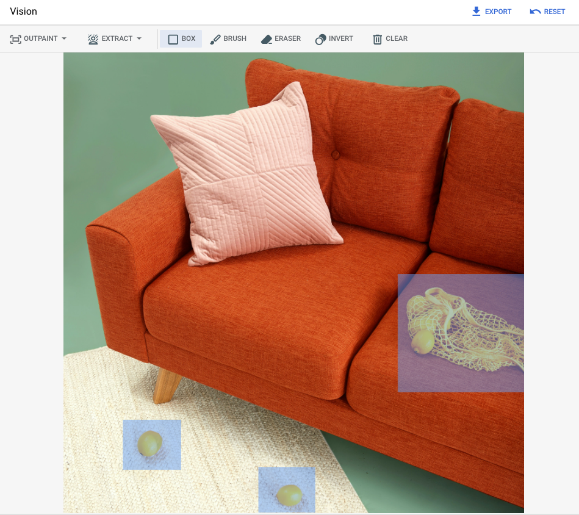
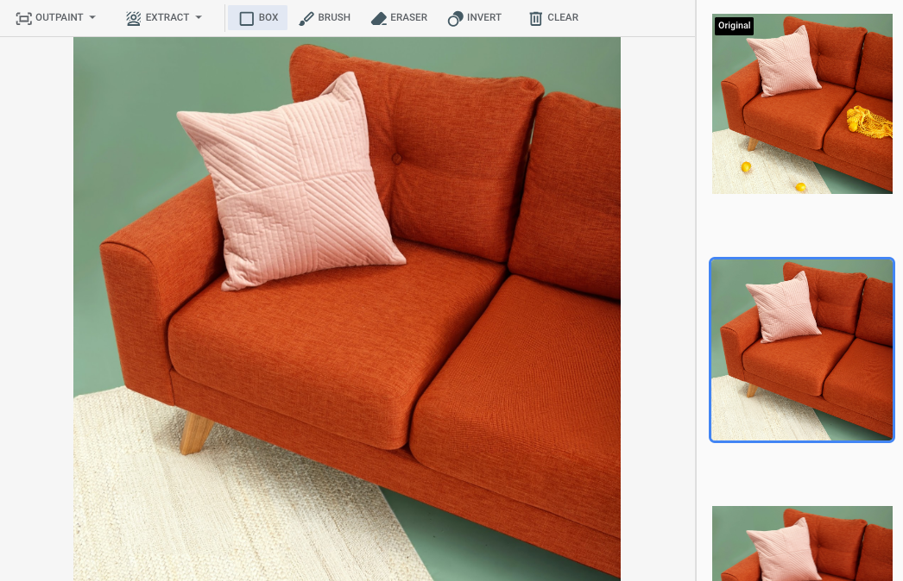
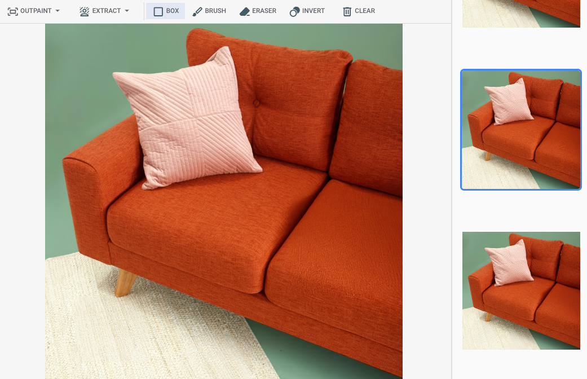
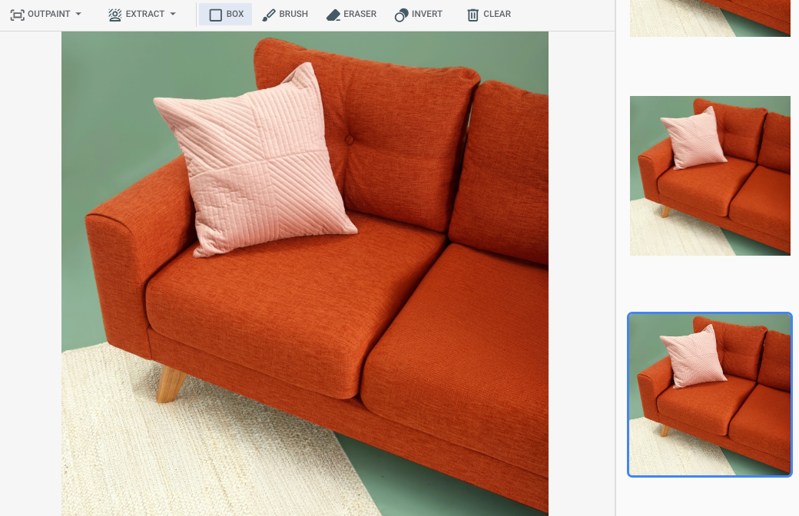

Remove objects from an image using inpainting¶
This page describes how to remove objects from an image using Imagen on Vertex AI. This process, known as inpainting, allows you to specify an area of an image to be modified. You can either provide your own mask to define this area or have Imagen generate a mask for you automatically.
Content removal example¶
The following example demonstrates how inpainting is used to remove content from an image by specifying a mask.
To see a live example of Imagen 3 Editing, you can run the "Imagen 3 Image Editing" Jupyter notebook in one of the following environments:
Open in Colab Open in Colab Enterprise Open in Vertex AI Workbench View on GitHub
Inputs
| Base image* to edit | Mask area specified using tools in the Google Cloud console | Text prompt |
|---|---|---|
 |
(no prompt provided) |
*Image credit: Inside Weather on Unsplash.
Output after specifying a mask area in the Google Cloud console
| Generated Image 1 | Generated Image 2 | Generated Image 3 |
|---|---|---|
 |
 |
 |
View Imagen for Editing and Customization model card
Workflow¶
This diagram shows the overall workflow for removing objects from an image.
flowchart TD
A[Set up your environment] --> B{Choose a removal method};
B -- Defined Mask --> C[Provide base image and mask];
B -- Automatic Mask --> D[Provide base image and prompt];
C --> E[Generate edited image];
D --> E;
click A "#before-you-begin"
click B "#choose-a-removal-method"
click C "#remove-with-a-defined-mask-area"
click D "#remove-with-automatic-mask-detection"
click E "#remove-with-a-defined-mask-area"Before you begin¶
Concepts
- Inpainting: A technique where a model fills in a selected area (mask) of an image with new content, often to remove unwanted objects or repair imperfections.
- Mask: A black-and-white image used to define the specific area of a base image that you want to edit. The white areas of the mask indicate where changes should be applied.
- Base Image: The original image that you want to modify.
- Prompt: A text description that guides the model on how to generate or modify the image content. For object removal, a prompt is often omitted.
Set up your project and environment
Prerequisites
-
Sign in to your Google Cloud account. If you're new to Google Cloud, create an account to evaluate how our products perform in real-world scenarios. New customers also get $300 in free credits to run, test, and deploy workloads.
-
In the Google Cloud console, on the project selector page, select or create a Google Cloud project.
Note: If you don't plan to keep the resources that you create in this procedure, create a project instead of selecting an existing project. After you finish these steps, you can delete the project, removing all resources associated with the project.
-
Make sure that billing is enabled for your Google Cloud project.
-
Enable the Vertex AI API.
Set up authentication
Select the tab for how you plan to use the samples on this page:
When you use the Google Cloud console to access Google Cloud services and APIs, you don't need to set up authentication.
To use the Java samples on this page in a local development environment, install and initialize the gcloud CLI, and then set up Application Default Credentials with your user credentials.
-
Install the Google Cloud CLI.
-
If you're using an external identity provider (IdP), you must first sign in to the gcloud CLI with your federated identity.
-
To initialize the gcloud CLI, run the following command:
-
If you're using a local shell, then create local authentication credentials for your user account:
You don't need to do this if you're using Cloud Shell.
If an authentication error is returned, and you are using an external identity provider (IdP), confirm that you have signed in to the gcloud CLI with your federated identity.
For more information, see Set up ADC for a local development environment in the Google Cloud authentication documentation.
To use the Node.js samples on this page in a local development environment, install and initialize the gcloud CLI, and then set up Application Default Credentials with your user credentials.
-
Install the Google Cloud CLI.
-
If you're using an external identity provider (IdP), you must first sign in to the gcloud CLI with your federated identity.
-
To initialize the gcloud CLI, run the following command:
-
If you're using a local shell, then create local authentication credentials for your user account:
You don't need to do this if you're using Cloud Shell.
If an authentication error is returned, and you are using an external identity provider (IdP), confirm that you have signed in to the gcloud CLI with your federated identity.
For more information, see Set up ADC for a local development environment in the Google Cloud authentication documentation.
To use the Python samples on this page in a local development environment, install and initialize the gcloud CLI, and then set up Application Default Credentials with your user credentials.
-
Install the Google Cloud CLI.
-
If you're using an external identity provider (IdP), you must first sign in to the gcloud CLI with your federated identity.
-
To initialize the gcloud CLI, run the following command:
-
If you're using a local shell, then create local authentication credentials for your user account:
You don't need to do this if you're using Cloud Shell.
If an authentication error is returned, and you are using an external identity provider (IdP), confirm that you have signed in to the gcloud CLI with your federated identity.
For more information, see Set up ADC for a local development environment in the Google Cloud authentication documentation.
To use the REST API samples on this page in a local development environment, you use the credentials you provide to the gcloud CLI.
After installing the Google Cloud CLI, initialize it by running the following command:
If you're using an external identity provider (IdP), you must first sign in to the gcloud CLI with your federated identity.
For more information, see Authenticate for using REST in the Google Cloud authentication documentation.
Choose a removal method¶
You can remove objects from an image by either providing a specific mask or by letting Imagen automatically detect objects to create a mask.
| Method | Description | Use Case |
|---|---|---|
| Defined Mask Area | You provide a black-and-white mask image where white pixels indicate the exact area to be removed and replaced. | Best for precise control when you need to remove specific, well-defined objects. |
| Automatic Mask Detection | You instruct the model to automatically identify and mask foreground objects, background elements, or people. | Best for quickly removing common subjects without needing to create a manual mask. |
Troubleshooting
If you encounter issues with code snippets or setup, refer to the Troubleshooting Guide.
Use the following samples to specify inpainting to remove content. In these samples, you provide a base image and a mask image to define the area for removal.
Use the following samples to send an inpainting request using the Imagen 3 model.
-
In the Google Cloud console, go to the Vertex AI > Media Studio page.
-
Click Upload. In the displayed file dialog, select a file to upload.
- Click Inpaint.
- In the Parameters panel, click Inpaint (Remove).
- Do one of the following:
- Upload your own mask:
- Create a mask on your computer.
- Click Upload mask. In the displayed dialog, select a mask to upload.
- Define your own mask: In the editing toolbar, use the mask tools (check_box_outline_blankbox, brushbrush, or masked_transitionsinvert tool) to specify the area or areas to add content to.
- Upload your own mask:
- Optional: In the Parameters panel, adjust the following options:
- Model: The Imagen model to use.
- Number of results: The number of results to generate.
- Negative prompt: Items to avoid generating.
- In the prompt field, enter a prompt to modify the image.
- Click play_arrowGenerate.
Install
To learn more, see the SDK reference documentation.
Set environment variables to use the Gen AI SDK with Vertex AI:
# Replace the `GOOGLE_CLOUD_PROJECT` and `GOOGLE_CLOUD_LOCATION` values
# with appropriate values for your project.
export GOOGLE_CLOUD_PROJECT=GOOGLE_CLOUD_PROJECT
export GOOGLE_CLOUD_LOCATION=us-central1
export GOOGLE_GENAI_USE_VERTEXAI=True
from google import genai
from google.genai.types import RawReferenceImage, MaskReferenceImage, MaskReferenceConfig, EditImageConfig
client = genai.Client()
# TODO(developer): Update and un-comment below line
# output_file = "output-image.png"
raw_ref = RawReferenceImage(
reference_image=Image.from_file(location='test_resources/fruit.png'), reference_id=0)
mask_ref = MaskReferenceImage(
reference_id=1,
reference_image=Image.from_file(location='test_resources/fruit_mask.png'),
config=MaskReferenceConfig(
mask_mode="MASK_MODE_USER_PROVIDED",
mask_dilation=0.01,
),
)
image = client.models.edit_image(
model="imagen-3.0-capability-001",
prompt="",
reference_images=[raw_ref, mask_ref],
config=EditImageConfig(
edit_mode="EDIT_MODE_INPAINT_REMOVAL",
),
)
image.generated_images[0].image.save(output_file)
print(f"Created output image using {len(image.generated_images[0].image.image_bytes)} bytes")
# Example response:
# Created output image using 1234567 bytes
For more information, see the Edit images API reference.
Before using any of the request data, make the following replacements:
PROJECT_ID: Your Google Cloud project ID.LOCATION: Your project's region. For example,us-central1,europe-west2, orasia-northeast3. For a list of available regions, see Generative AI on Vertex AI locations.prompt: For best results, omit a prompt andnegativePromptwhen you use inpainting for removal.B64_BASE_IMAGE: The base image to edit or upscale. The image must be specified as a base64-encoded byte string. Size limit: 10 MB.B64_MASK_IMAGE: The black and white image you want to use as a mask layer to edit the original image. The image must be specified as a base64-encoded byte string. Size limit: 10 MB.MASK_DILATION- float. The percentage of image width to dilate this mask by. A value of0.01is recommended to compensate for imperfect input masks.EDIT_STEPS- integer. The number of sampling steps for the base model. For inpainting removal, start at12steps. Increase steps to upper limit of75if the quality doesn't meet your requirements. Increasing steps also increases request latency.EDIT_IMAGE_COUNT- The number of edited images. Accepted integer values: 1-4. Default value: 4.
HTTP method and URL:
POST https://LOCATION-aiplatform.googleapis.com/v1/projects/PROJECT_ID/locations/LOCATION/publishers/google/models/imagen-3.0-capability-001:predict
Request JSON body:
{
"instances": [
{
"prompt": "",
"referenceImages": [
{
"referenceType": "REFERENCE_TYPE_RAW",
"referenceId": 1,
"referenceImage": {
"bytesBase64Encoded": "B64_BASE_IMAGE"
}
},
{
"referenceType": "REFERENCE_TYPE_MASK",
"referenceId": 2,
"referenceImage": {
"bytesBase64Encoded": "B64_MASK_IMAGE"
},
"maskImageConfig": {
"maskMode": "MASK_MODE_USER_PROVIDED",
"dilation": MASK_DILATION
}
}
]
}
],
"parameters": {
"editConfig": {
"baseSteps": EDIT_STEPS
},"editMode": "EDIT_MODE_INPAINT_REMOVAL",
"sampleCount": EDIT_IMAGE_COUNT
}
}
To send your request, choose one of these options:
Save the request body in a file named request.json, and execute the following command:
Save the request body in a file named request.json, and execute the following command:
$cred = gcloud auth print-access-token
$headers = @{ "Authorization" = "Bearer $cred" }
Invoke-WebRequest `
-Method POST `
-Headers $headers `
-ContentType: "application/json; charset=utf-8" `
-InFile request.json `
-Uri "https://LOCATION-aiplatform.googleapis.com/v1/projects/PROJECT_ID/locations/LOCATION/publishers/google/models/imagen-3.0-capability-001:predict" | Select-Object -Expand Content
The following sample response is for a request with "sampleCount": 2.
Caution
Starting on June 24, 2025, Imagen versions 1 and 2 are deprecated. Imagen models
imagegeneration@002,imagegeneration@005, andimagegeneration@006will be removed on September 24, 2025. For more information about migrating to Imagen 3, see Migrate to Imagen 3.
Use the following samples to send an inpainting request using the Imagen 2 model.
-
In the Google Cloud console, go to the Vertex AI > Media Studio page.
-
In the lower task panel, click editEdit image.
- Click Upload to select your locally stored product image to edit.
- In the editing toolbar, use the mask tools (check_box_outline_blankbox, brushbrush, or masked_transitionsinvert tool) to specify the area or areas to remove content from.
- Optional. In the Parameters panel, adjust the Number of results, Negative prompt (optional for removal), Text prompt guidance, or other parameters.
- Leave the prompt field empty.
- Click play_arrowGenerate.
Before using any of the request data, make the following replacements:
PROJECT_ID: Your Google Cloud project ID.LOCATION: Your project's region. For example,us-central1,europe-west2, orasia-northeast3. For a list of available regions, see Generative AI on Vertex AI locations.B64_BASE_IMAGE: The base image to edit or upscale. The image must be specified as a base64-encoded byte string. Size limit: 10 MB.B64_MASK_IMAGE: The black and white image you want to use as a mask layer to edit the original image. The image must be specified as a base64-encoded byte string. Size limit: 10 MB.EDIT_IMAGE_COUNT: The number of edited images. Default value: 4.
HTTP method and URL:
POST https://LOCATION-aiplatform.googleapis.com/v1/projects/PROJECT_ID/locations/LOCATION/publishers/google/models/imagegeneration@006:predict
Request JSON body:
{
"instances": [
{
"prompt": "",
"image": {
"bytesBase64Encoded": "B64_BASE_IMAGE"
},
"mask": {
"image": {
"bytesBase64Encoded": "B64_MASK_IMAGE"
}
}
}
],
"parameters": {
"sampleCount": EDIT_IMAGE_COUNT,
"editConfig": {"editMode": "inpainting-remove"
}
}
}
To send your request, choose one of these options:
Save the request body in a file named request.json, and execute the following command:
Save the request body in a file named request.json, and execute the following command:
$cred = gcloud auth print-access-token
$headers = @{ "Authorization" = "Bearer $cred" }
Invoke-WebRequest `
-Method POST `
-Headers $headers `
-ContentType: "application/json; charset=utf-8" `
-InFile request.json `
-Uri "https://LOCATION-aiplatform.googleapis.com/v1/projects/PROJECT_ID/locations/LOCATION/publishers/google/models/imagegeneration@006:predict" | Select-Object -Expand Content
The following sample response is for a request with "sampleCount": 2.
To learn how to install or update the Vertex AI SDK for Python, see Install the Vertex AI SDK for Python. For more information, see the Vertex AI SDK for Python API reference documentation.
import vertexai
from vertexai.preview.vision_models import Image, ImageGenerationModel
# TODO(developer): Update and un-comment below lines
# PROJECT_ID = "your-project-id"
# input_file = "input-image.png"
# mask_file = "mask-image.png"
# output_file = "outpur-image.png"
# prompt = "" # The text prompt describing the entire image.
vertexai.init(project=PROJECT_ID, location="us-central1")
model = ImageGenerationModel.from_pretrained("imagegeneration@006")
base_img = Image.load_from_file(location=input_file)
mask_img = Image.load_from_file(location=mask_file)
images = model.edit_image(
base_image=base_img,
mask=mask_img,
prompt=prompt,
edit_mode="inpainting-remove",
# Optional parameters
# negative_prompt="", # Describes the object being removed (i.e., "person")
)
images[0].save(location=output_file, include_generation_parameters=False)
# Optional. View the edited image in a notebook.
# images[0].show()
print(f"Created output image using {len(images[0]._image_bytes)} bytes")
# Example response:
# Created output image using 12345678 bytes
Before trying this sample, follow the Java setup instructions in the Vertex AI quickstart using client libraries. For more information, see the Vertex AI Java API reference documentation.
import com.google.api.gax.rpc.ApiException;
import com.google.cloud.aiplatform.v1.EndpointName;
import com.google.cloud.aiplatform.v1.PredictResponse;
import com.google.cloud.aiplatform.v1.PredictionServiceClient;
import com.google.cloud.aiplatform.v1.PredictionServiceSettings;
import com.google.gson.Gson;
import com.google.protobuf.InvalidProtocolBufferException;
import com.google.protobuf.Value;
import com.google.protobuf.util.JsonFormat;
import java.io.IOException;
import java.nio.file.Files;
import java.nio.file.Path;
import java.nio.file.Paths;
import java.util.Base64;
import java.util.Collections;
import java.util.HashMap;
import java.util.Map;
public class EditImageInpaintingRemoveMaskSample {
public static void main(String[] args) throws IOException {
// TODO(developer): Replace these variables before running the sample.
String projectId = "my-project-id";
String location = "us-central1";
String inputPath = "/path/to/my-input.png";
String maskPath = "/path/to/my-mask.png";
String prompt = ""; // The text prompt describing the entire image.
editImageInpaintingRemoveMask(projectId, location, inputPath, maskPath, prompt);
}
// Edit an image using a mask file. Inpainting can remove an object from the masked area.
public static PredictResponse editImageInpaintingRemoveMask(
String projectId, String location, String inputPath, String maskPath, String prompt)
throws ApiException, IOException {
final String endpoint = String.format("%s-aiplatform.googleapis.com:443", location);
PredictionServiceSettings predictionServiceSettings =
PredictionServiceSettings.newBuilder().setEndpoint(endpoint).build();
// Initialize client that will be used to send requests. This client only needs to be created
// once, and can be reused for multiple requests.
try (PredictionServiceClient predictionServiceClient =
PredictionServiceClient.create(predictionServiceSettings)) {
final EndpointName endpointName =
EndpointName.ofProjectLocationPublisherModelName(
projectId, location, "google", "imagegeneration@006");
// Encode image and mask to Base64
String imageBase64 =
Base64.getEncoder().encodeToString(Files.readAllBytes(Paths.get(inputPath)));
String maskBase64 =
Base64.getEncoder().encodeToString(Files.readAllBytes(Paths.get(maskPath)));
// Create the image and image mask maps
Map<String, String> imageMap = new HashMap<>();
imageMap.put("bytesBase64Encoded", imageBase64);
Map<String, String> maskMap = new HashMap<>();
maskMap.put("bytesBase64Encoded", maskBase64);
Map<String, Map> imageMaskMap = new HashMap<>();
imageMaskMap.put("image", maskMap);
Map<String, Object> instancesMap = new HashMap<>();
instancesMap.put("prompt", prompt); // [ "prompt", "<my-prompt>" ]
instancesMap.put(
"image", imageMap); // [ "image", [ "bytesBase64Encoded", "iVBORw0KGgo...==" ] ]
instancesMap.put(
"mask",
imageMaskMap); // [ "mask", [ "image", [ "bytesBase64Encoded", "iJKDF0KGpl...==" ] ] ]
instancesMap.put("editMode", "inpainting-remove"); // [ "editMode", "inpainting-remove" ]
Value instances = mapToValue(instancesMap);
// Optional parameters
Map<String, Object> paramsMap = new HashMap<>();
paramsMap.put("sampleCount", 1);
Value parameters = mapToValue(paramsMap);
PredictResponse predictResponse =
predictionServiceClient.predict(
endpointName, Collections.singletonList(instances), parameters);
for (Value prediction : predictResponse.getPredictionsList()) {
Map<String, Value> fieldsMap = prediction.getStructValue().getFieldsMap();
if (fieldsMap.containsKey("bytesBase64Encoded")) {
String bytesBase64Encoded = fieldsMap.get("bytesBase64Encoded").getStringValue();
Path tmpPath = Files.createTempFile("imagen-", ".png");
Files.write(tmpPath, Base64.getDecoder().decode(bytesBase64Encoded));
System.out.format("Image file written to: %s\n", tmpPath.toUri());
}
}
return predictResponse;
}
}
private static Value mapToValue(Map<String, Object> map) throws InvalidProtocolBufferException {
Gson gson = new Gson();
String json = gson.toJson(map);
Value.Builder builder = Value.newBuilder();
JsonFormat.parser().merge(json, builder);
return builder.build();
}
}
Before trying this sample, follow the Node.js setup instructions in the Vertex AI quickstart using client libraries. For more information, see the Vertex AI Node.js API reference documentation.
/**
* TODO(developer): Update these variables before running the sample.
*/
const projectId = process.env.CAIP_PROJECT_ID;
const location = 'us-central1';
const inputFile = 'resources/volleyball_game.png';
const maskFile = 'resources/volleyball_game_inpainting_remove_mask.png';
const prompt = 'volleyball game';
const aiplatform = require('@google-cloud/aiplatform');
// Imports the Google Cloud Prediction Service Client library
const {PredictionServiceClient} = aiplatform.v1;
// Import the helper module for converting arbitrary protobuf.Value objects
const {helpers} = aiplatform;
// Specifies the location of the api endpoint
const clientOptions = {
apiEndpoint: `${location}-aiplatform.googleapis.com`,
};
// Instantiates a client
const predictionServiceClient = new PredictionServiceClient(clientOptions);
async function editImageInpaintingRemoveMask() {
const fs = require('fs');
const util = require('util');
// Configure the parent resource
const endpoint = `projects/${projectId}/locations/${location}/publishers/google/models/imagegeneration@006`;
const imageFile = fs.readFileSync(inputFile);
// Convert the image data to a Buffer and base64 encode it.
const encodedImage = Buffer.from(imageFile).toString('base64');
const maskImageFile = fs.readFileSync(maskFile);
// Convert the image mask data to a Buffer and base64 encode it.
const encodedMask = Buffer.from(maskImageFile).toString('base64');
const promptObj = {
prompt: prompt, // The text prompt describing the entire image
editMode: 'inpainting-remove',
image: {
bytesBase64Encoded: encodedImage,
},
mask: {
image: {
bytesBase64Encoded: encodedMask,
},
},
};
const instanceValue = helpers.toValue(promptObj);
const instances = [instanceValue];
const parameter = {
// Optional parameters
seed: 100,
// Controls the strength of the prompt
// 0-9 (low strength), 10-20 (medium strength), 21+ (high strength)
guidanceScale: 21,
sampleCount: 1,
};
const parameters = helpers.toValue(parameter);
const request = {
endpoint,
instances,
parameters,
};
// Predict request
const [response] = await predictionServiceClient.predict(request);
const predictions = response.predictions;
if (predictions.length === 0) {
console.log(
'No image was generated. Check the request parameters and prompt.'
);
} else {
let i = 1;
for (const prediction of predictions) {
const buff = Buffer.from(
prediction.structValue.fields.bytesBase64Encoded.stringValue,
'base64'
);
// Write image content to the output file
const writeFile = util.promisify(fs.writeFile);
const filename = `output${i}.png`;
await writeFile(filename, buff);
console.log(`Saved image ${filename}`);
i++;
}
}
}
await editImageInpaintingRemoveMask();
Use the following samples to remove content by having Imagen automatically detect and mask objects. In these samples, you provide a base image and a prompt.
Use the following samples to send an inpainting request using the Imagen 3 model.
-
In the Google Cloud console, go to the Vertex AI > Media Studio page.
-
Click Upload. In the displayed file dialog, select a file to upload.
- Click Inpaint.
- In the Parameters panel, select Inpaint (Remove).
- In the editing toolbar, click background_replaceExtract.
- Select one of the mask extraction options:
- Background elements: Detects the background elements and creates a mask around them.
- wallpaperForeground elements: Detects the foreground objects and creates a mask around them.
- background_replacePeople: Detects people and creates a mask around them.
- Optional: In the Parameters panel, adjust the following options:
- Model: The Imagen model to use.
- Number of results: The number of results to generate.
- Negative prompt: Items to avoid generating.
- In the prompt field, enter a new prompt to modify the image.
- Click sendGenerate.
Install
To learn more, see the SDK reference documentation.
Set environment variables to use the Gen AI SDK with Vertex AI:
# Replace the `GOOGLE_CLOUD_PROJECT` and `GOOGLE_CLOUD_LOCATION` values
# with appropriate values for your project.
export GOOGLE_CLOUD_PROJECT=GOOGLE_CLOUD_PROJECT
export GOOGLE_CLOUD_LOCATION=us-central1
export GOOGLE_GENAI_USE_VERTEXAI=True
from google import genai
from google.genai.types import RawReferenceImage, MaskReferenceImage, MaskReferenceConfig, EditImageConfig
client = genai.Client()
# TODO(developer): Update and un-comment below line
# output_file = "output-image.png"
raw_ref = RawReferenceImage(
reference_image=Image.from_file(location='test_resources/fruit.png'), reference_id=0)
mask_ref = MaskReferenceImage(
reference_id=1,
reference_image=None,
config=MaskReferenceConfig(
mask_mode="MASK_MODE_FOREGROUND",
),
)
image = client.models.edit_image(
model="imagen-3.0-capability-001",
prompt="",
reference_images=[raw_ref, mask_ref],
config=EditImageConfig(
edit_mode="EDIT_MODE_INPAINT_REMOVAL",
),
)
image.generated_images[0].image.save(output_file)
print(f"Created output image using {len(image.generated_images[0].image.image_bytes)} bytes")
# Example response:
# Created output image using 1234567 bytes
For more information, see the Edit images API reference.
Before using any of the request data, make the following replacements:
PROJECT_ID: Your Google Cloud project ID.LOCATION: Your project's region. For example,us-central1,europe-west2, orasia-northeast3. For a list of available regions, see Generative AI on Vertex AI locations.prompt: For best results, omit a prompt andnegativePromptwhen you use inpainting for removal.B64_BASE_IMAGE: The base image to edit or upscale. The image must be specified as a base64-encoded byte string. Size limit: 10 MB.MASK_MODE- A string that sets the type of automatic mask creation the model uses. Available values:MASK_MODE_BACKGROUND: Automatically generates a mask using background segmentation. Use this setting for modifying background content.MASK_MODE_FOREGROUND: Automatically generates a mask using foreground segmentation. Use this setting to modify foreground content, such as removing these foreground objects (removal using inpainting).MASK_MODE_SEMANTIC: Automatically generates a mask using semantic segmentation based on the segmentation classes you specify in themaskImageConfig.maskClassesarray. For example:
MASK_DILATION- float. The percentage of image width to dilate this mask by. A value of0.01is recommended to compensate for imperfect input masks.EDIT_STEPS- integer. The number of sampling steps for the base model. For inpainting removal, start at12steps. Increase steps to upper limit of75if the quality doesn't meet your requirements. Increasing steps also increases request latency.EDIT_IMAGE_COUNT- The number of edited images. Accepted integer values: 1-4. Default value: 4.
HTTP method and URL:
POST https://LOCATION-aiplatform.googleapis.com/v1/projects/PROJECT_ID/locations/LOCATION/publishers/google/models/imagen-3.0-capability-001:predict
Request JSON body:
{
"instances": [
{
"prompt": "",
"referenceImages": [
{
"referenceType": "REFERENCE_TYPE_RAW",
"referenceId": 1,
"referenceImage": {
"bytesBase64Encoded": "B64_BASE_IMAGE"
}
},
{
"referenceType": "REFERENCE_TYPE_MASK",
"referenceId": 2,
"maskImageConfig": {"maskMode": " MASK_MODE",
"dilation": MASK_DILATION
}
}
]
}
],
"parameters": {
"editConfig": {
"baseSteps": EDIT_STEPS
},"editMode": "EDIT_MODE_INPAINT_REMOVAL",
"sampleCount": EDIT_IMAGE_COUNT
}
}
To send your request, choose one of these options:
Save the request body in a file named request.json, and execute the following command:
Save the request body in a file named request.json, and execute the following command:
$cred = gcloud auth print-access-token
$headers = @{ "Authorization" = "Bearer $cred" }
Invoke-WebRequest `
-Method POST `
-Headers $headers `
-ContentType: "application/json; charset=utf-8" `
-InFile request.json `
-Uri "https://LOCATION-aiplatform.googleapis.com/v1/projects/PROJECT_ID/locations/LOCATION/publishers/google/models/imagen-3.0-capability-001:predict" | Select-Object -Expand Content
The following sample response is for a request with "sampleCount": 2.
Caution
Starting on June 24, 2025, Imagen versions 1 and 2 are deprecated. Imagen models
imagegeneration@002,imagegeneration@005, andimagegeneration@006will be removed on September 24, 2025. For more information about migrating to Imagen 3, see Migrate to Imagen 3.
Use the following samples to send an inpainting request using the Imagen 2 model.
-
In the Google Cloud console, go to the Vertex AI > Media Studio page.
-
In the lower task panel, click editEdit image.
- Click Upload to select your locally stored product image to edit.
- In the editing toolbar, click background_replace Extract.
- Select one of the mask extraction options:
- Background elements - Detects the background elements and creates a mask around them.
- wallpaperForeground elements - Detects the foreground objects and creates a mask around them.
- background_replace People - Detects people and creates a mask around them.
- Optional. In the Parameters panel, adjust the Number of results, Negative prompt, Text prompt guidance, or other parameters.
- Leave the prompt field empty.
- Click play_arrowGenerate.
Before using any of the request data, make the following replacements:
PROJECT_ID: Your Google Cloud project ID.LOCATION: Your project's region. For example,us-central1,europe-west2, orasia-northeast3. For a list of available regions, see Generative AI on Vertex AI locations.B64_BASE_IMAGE: The base image to edit or upscale. The image must be specified as a base64-encoded byte string. Size limit: 10 MB.EDIT_IMAGE_COUNT: The number of edited images. Default value: 4.MASK_TYPE: Prompts the model to generate a mask instead of you needing to provide one. Consequently, when you provide this parameter, you should omit amaskobject. Available values:background: Automatically generates a mask to all regions except primary object, person, or subject in the image.foreground: Automatically generates a mask to the primary object, person, or subject in the image.semantic: Use automatic segmentation to create a mask area for one or more of the segmentation classes. Set the segmentation classes using theclassesparameter and the correspondingclass_idvalues. You can specify up to 5 classes. When you use the semantic mask type, themaskModeobject should look like the following:
HTTP method and URL:
POST https://LOCATION-aiplatform.googleapis.com/v1/projects/PROJECT_ID/locations/LOCATION/publishers/google/models/imagegeneration@006:predict
Request JSON body:
{
"instances": [
{
"prompt": "",
"image": {
"bytesBase64Encoded": "B64_BASE_IMAGE"
}
}
],
"parameters": {
"sampleCount": EDIT_IMAGE_COUNT,
"editConfig": {"editMode": "inpainting-remove",
"maskMode": {
"maskType": " MASK_TYPE"
}
}
}
}
To send your request, choose one of these options:
Save the request body in a file named request.json, and execute the following command:
Save the request body in a file named request.json, and execute the following command:
$cred = gcloud auth print-access-token
$headers = @{ "Authorization" = "Bearer $cred" }
Invoke-WebRequest `
-Method POST `
-Headers $headers `
-ContentType: "application/json; charset=utf-8" `
-InFile request.json `
-Uri "https://LOCATION-aiplatform.googleapis.com/v1/projects/PROJECT_ID/locations/LOCATION/publishers/google/models/imagegeneration@006:predict" | Select-Object -Expand Content
The following sample response is for a request with "sampleCount": 2.
To learn how to install or update the Vertex AI SDK for Python, see Install the Vertex AI SDK for Python. For more information, see the Vertex AI SDK for Python API reference documentation.
import vertexai
from vertexai.preview.vision_models import Image, ImageGenerationModel
# TODO(developer): Update and un-comment below lines
# PROJECT_ID = "your-project-id"
# input_file = "input-image.png"
# mask_mode = "foreground" # 'background', 'foreground', or 'semantic'
# output_file = "output-image.png"
# prompt = "sports car" # The text prompt describing what you want to see in the edited image.
vertexai.init(project=PROJECT_ID, location="us-central1")
model = ImageGenerationModel.from_pretrained("imagegeneration@006")
base_img = Image.load_from_file(location=input_file)
images = model.edit_image(
base_image=base_img,
mask_mode=mask_mode,
prompt=prompt,
edit_mode="inpainting-remove",
)
images[0].save(location=output_file, include_generation_parameters=False)
# Optional. View the edited image in a notebook.
# images[0].show()
print(f"Created output image using {len(images[0]._image_bytes)} bytes")
# Example response:
# Created output image using 1279948 bytes
Limitations¶
The following sections explain limitations of Imagen's remove objects feature.
Modified pixels¶
Pixels generated by the model that aren't in the mask aren't guaranteed to be identical to the input and are generated at the model's resolution (such as 1024x1024). Very minute changes may exist in the generated image.
If you want perfect preservation of the image, then we recommend that you blend the generated image with the input image, using the mask. Typically, if the input image resolution is 2K or higher, blending the generated image and input image is required.
Removal limitation¶
Some small objects adjacent to masks may also be removed. As a best practice, we recommend that you make the mask as precise as possible.
Removing large areas in outdoor images sky regions may result in unwanted artifacts. As a best practice, we recommend that you provide a prompt.
What's next¶
Read articles about Imagen and other Generative AI on Vertex AI products: